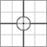

The style declarations which apply to the text below are:
P.test {background: white; font-size: 20px;
margin-left: 30px; margin-right: 10px; padding: 0; border: 0;}
IMG {padding: 0; border: 0; margin: 0;}
P.test IMG {float: left;}
#img2 {margin-top: 30px; margin-left: 30px;}
#img3 {margin-top: -30px; margin-left: -30px;}
#img4 {margin-right: 30px; margin-bottom: 30px;}
#img5 {margin-right: -30px; margin-bottom: -30px;}
This paragraph should have a white background which extends to the edges of the element's box. There is no padding set on this paragraph whatsoever. If the background of the entire box is not white, this may cause problems with the following tests; at any rate, it must be taken into account.
 The image in the upper left corner of this paragraph should be floated left, and nothing more. The edges of the white background should line up with the top and left edges of the image. This paragraph should have a white background, first of all, which extends to the edges of the element's box. There is no padding set on this paragraph whatsoever.
The image in the upper left corner of this paragraph should be pushed down and to the right 30 pixels each from the upper left corner of the paragraph's box, and displace the paragraph text accordingly. This paragraph should have a white background, first of all, which extends to the edges of the element's box. There is no padding set on this paragraph whatsoever.
The image in the upper left corner of this paragraph should be pushed up and to the left 30 pixels each from the upper left corner of the paragraph's box, thus causing the edges of the white background to align with the thick gray lines in the image. This paragraph should have a white background, first of all, which extends to the edges of the element's box. There is no padding set on this paragraph whatsoever.
The image in the upper left corner of this paragraph should be floated left, and the edges of the white background should line up with the top and left edges of the image. However, there should be 30 pixels of space between the right and bottom edges of the image and the paragraph text around it. This paragraph should have a white background, first of all, which extends to the edges of the element's box. There is no padding set on this paragraph whatsoever.
The image in the upper left corner of this paragraph should be floated left, and the edges of the white background should line up with the top and left edges of the image. However, the text should overlap the image's right and bottom sides, lining up with the thick gray lines in the image. This paragraph should have a white background, first of all, which extends to the edges of the element's box. There is no padding set on this paragraph whatsoever.
| TABLE Testing Section | |
This paragraph should have a white background which extends to the edges of the element's box. There is no padding set on this paragraph whatsoever. If the background of the entire box is not white, this may cause problems with the following tests; at any rate, it must be taken into account. The image in the upper left corner of this paragraph should be floated left, and nothing more. The edges of the white background should line up with the top and left edges of the image. This paragraph should have a white background, first of all, which extends to the edges of the element's box. There is no padding set on this paragraph whatsoever. The image in the upper left corner of this paragraph should be pushed down and to the right 30 pixels each from the upper left corner of the paragraph's box, and displace the paragraph text accordingly. This paragraph should have a white background, first of all, which extends to the edges of the element's box. There is no padding set on this paragraph whatsoever. The image in the upper left corner of this paragraph should be pushed up and to the left 30 pixels each from the upper left corner of the paragraph's box, thus causing the edges of the white background to align with the thick gray lines in the image. This paragraph should have a white background, first of all, which extends to the edges of the element's box. There is no padding set on this paragraph whatsoever. The image in the upper left corner of this paragraph should be floated left, and the edges of the white background should line up with the top and left edges of the image. However, there should be 30 pixels of space between the right and bottom edges of the image and the paragraph text around it. This paragraph should have a white background, first of all, which extends to the edges of the element's box. There is no padding set on this paragraph whatsoever. The image in the upper left corner of this paragraph should be floated left, and the edges of the white background should line up with the top and left edges of the image. However, the text should overlap the image's right and bottom sides, lining up with the thick gray lines in the image. This paragraph should have a white background, first of all, which extends to the edges of the element's box. There is no padding set on this paragraph whatsoever. | |